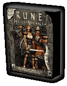

Two new gameplay modes. A horde of new characters. Thirty-three brand new maps. Improved combat system. New original music. Improved Internet play. What else could make a great game even better? Rune: Halls of Valhalla, the official multiplayer expansion pack for the highly-acclaimed Rune, offers gamers the chance to go online and test their mettle against players from around the world. Please note that the original Rune for Linux is required to play this new pack. You don't to wait to slay some more fearsome enemies, either -- Rune: Halls of Valhalla is now shipping for Linux! * Note: Rune: Halls of Valhalla is a standalone game from Rune, but the original Rune is required to play the expansion pack.